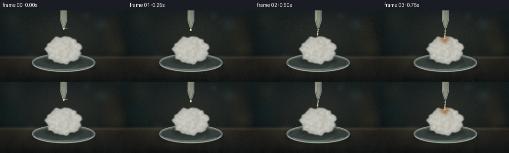
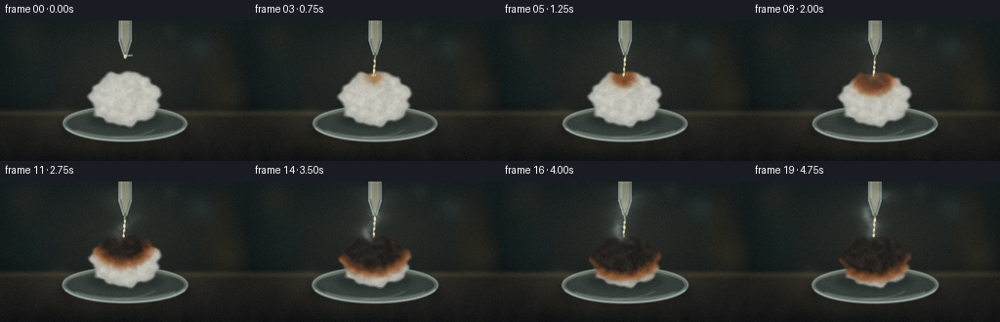
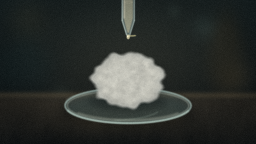
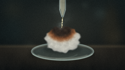
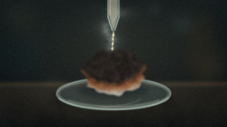
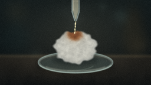
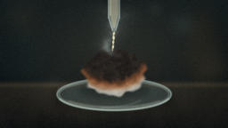
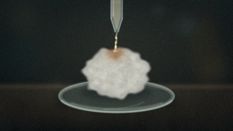
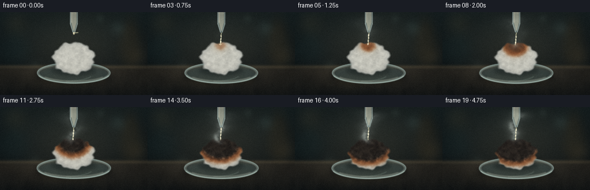

CODING AGENTS AS PIXEL WORLD MODELS
traex/DeepSeek-V4.1-Flash · phygen_154
点击播放 · 原生 RGB 像素
逐轮保存的候选
回放视频、检查图与代码变化。
每份候选均可单独播放。实际图片检查记录在下方工具轨迹中。
候选 01播放与检查图
点击播放 · 原生 RGB 像素


展开代码变化
--- 上一保存版本
+++ 本次保存版本
@@ -0,0 +1,679 @@
+from pathlib import Path
+
+import cv2
+import numpy as np
+
+from artifact_io import save
+
+
+CASE_DIR = Path(__file__).resolve().parent
+OUT_W, OUT_H = 256, 144
+SCALE = 4
+W, H = OUT_W * SCALE, OUT_H * SCALE
+N_FRAMES = 20
+FPS = 4
+
+Y, X = np.mgrid[0:H, 0:W].astype(np.float32)
+X /= SCALE
+Y /= SCALE
+
+
+def smoothstep(edge0, edge1, value):
+ t = np.clip((value - edge0) / (edge1 - edge0 + 1e-6), 0.0, 1.0)
+ return t * t * (3.0 - 2.0 * t)
+
+
+_noise_cache = {}
+
+
+def noise_field(seed, cells_x, cells_y):
+ key = (seed, cells_x, cells_y)
+ if key not in _noise_cache:
+ rng = np.random.default_rng(seed)
+ small = rng.random((cells_y + 1, cells_x + 1), dtype=np.float32)
+ _noise_cache[key] = cv2.resize(small, (W, H), interpolation=cv2.INTER_CUBIC)
+ return _noise_cache[key]
+
+
+def fbm(seed, cells_x=8, cells_y=5, octaves=4, persistence=0.55):
+ total = np.zeros((H, W), np.float32)
+ weight = 0.0
+ amplitude = 1.0
+ for octave in range(octaves):
+ total += amplitude * noise_field(
+ seed + octave * 97,
+ max(2, int(cells_x * (2**octave))),
+ max(2, int(cells_y * (2**octave))),
+ )
+ weight += amplitude
+ amplitude *= persistence
+ return total / weight
+
+
+def canvas():
+ return np.zeros((H, W, 3), np.float32)
+
+
+def alpha_mask(mask):
+ return mask[..., None]
+
+
+def composite(base, color, alpha):
+ if np.ndim(color) == 1:
+ color = np.asarray(color, np.float32)[None, None, :]
+ return base * (1.0 - alpha) + color * alpha
+
+
+def cv_mask(draw_fn, blur=0.0):
+ mask = np.zeros((H, W), np.uint8)
+ draw_fn(mask)
+ if blur > 0:
+ mask = cv2.GaussianBlur(mask, (0, 0), blur * SCALE)
+ return mask.astype(np.float32) / 255.0
+
+
+def ellipse_mask(cx, cy, rx, ry, blur=0.0):
+ return cv_mask(
+ lambda m: cv2.ellipse(
+ m,
+ (round(cx * SCALE), round(cy * SCALE)),
+ (round(rx * SCALE), round(ry * SCALE)),
+ 0,
+ 0,
+ 360,
+ 255,
+ -1,
+ cv2.LINE_AA,
+ ),
+ blur,
+ )
+
+
+def ellipse_ring(cx, cy, rx, ry, thickness, blur=0.0):
+ return cv_mask(
+ lambda m: cv2.ellipse(
+ m,
+ (round(cx * SCALE), round(cy * SCALE)),
+ (round(rx * SCALE), round(ry * SCALE)),
+ 0,
+ 0,
+ 360,
+ 255,
+ max(1, round(thickness * SCALE)),
+ cv2.LINE_AA,
+ ),
+ blur,
+ )
+
+
+def make_background(p):
+ image = canvas()
+ yn = Y / OUT_H
+ xn = X / OUT_W
+
+ top = np.array([22, 32, 34], np.float32)
+ bottom = np.array([10, 14, 16], np.float32)
+ image[:] = top * (1.0 - yn[..., None]) + bottom * yn[..., None]
+
+ # A warm practical light behind the glass gives the dark scene a readable focal point.
+ glow = np.exp(
+ -0.5
+ * (
+ ((X - 132.0) / 83.0) ** 2
+ + ((Y - 59.0) / 53.0) ** 2
+ )
+ )
+ image += glow[..., None] * np.array([23.0, 17.0, 10.0], np.float32)
+
+ # Defocused glassware, kept quiet so the cotton remains the visual subject.
+ bottle = ellipse_mask(226, 61, 18, 35, 8.0)
+ bottle += ellipse_mask(226, 24, 8, 18, 8.0)
+ bottle = np.clip(bottle, 0, 1) * 0.25
+ image = composite(image, np.array([77, 60, 35], np.float32), alpha_mask(bottle))
+
+ flask = ellipse_mask(24, 67, 27, 24, 10.0)
+ flask += ellipse_mask(24, 39, 6, 25, 10.0)
+ flask = np.clip(flask, 0, 1) * 0.22
+ image = composite(image, np.array([30, 53, 55], np.float32), alpha_mask(flask))
+
+ bokeh_specs = [
+ (27, 20, 14, (54, 42, 22), 0.24),
+ (205, 27, 9, (38, 51, 49), 0.30),
+ (240, 78, 12, (61, 47, 28), 0.20),
+ (61, 93, 7, (43, 51, 45), 0.16),
+ (174, 11, 5, (38, 47, 43), 0.22),
+ ]
+ for cx, cy, radius, color, strength in bokeh_specs:
+ disc = np.exp(-0.5 * (((X - cx) / radius) ** 2 + ((Y - cy) / radius) ** 2))
+ image += disc[..., None] * np.array(color, np.float32) * strength
+
+ # Bench top.
+ table = smoothstep(88.0, 104.0, Y)
+ table_top = np.array([55, 49, 40], np.float32)
+ table_bottom = np.array([21, 23, 23], np.float32)
+ table_t = np.clip((Y - 88.0) / 56.0, 0, 1)
+ table_color = table_top * (1.0 - table_t[..., None]) + table_bottom * table_t[..., None]
+ table_color *= 0.91 + 0.13 * fbm(204, 9, 4, 3, 0.58)[..., None]
+ image = composite(image, table_color, alpha_mask(table))
+
+ horizon = np.exp(-0.5 * ((Y - 95.0) / 2.2) ** 2)
+ image += horizon[..., None] * np.array([25, 20, 13], np.float32)
+
+ bench_texture = fbm(208, 24, 6, 3, 0.56) - 0.5
+ image += table[..., None] * bench_texture[..., None] * np.array([9, 8, 6], np.float32)
+
+ # Soft out-of-focus pools of light on the bench.
+ pools = [
+ (82, 122, 38, 13, 0.11),
+ (186, 134, 48, 15, 0.07),
+ ]
+ for cx, cy, rx, ry, strength in pools:
+ g = np.exp(-0.5 * (((X - cx) / rx) ** 2 + ((Y - cy) / ry) ** 2))
+ image += g[..., None] * np.array([76, 57, 34], np.float32) * strength
+
+ # Slow camera push-in is applied after the scene is assembled.
+ return image
+
+
+def make_watch_glass_back(image):
+ shadow = ellipse_mask(128, 111.0, 65, 17, 4.2) * 0.52
+ image *= (1.0 - alpha_mask(shadow) * 0.58)
+
+ reflected = ellipse_mask(128, 116.0, 57, 12, 5.5) * 0.18
+ image = composite(image, np.array([94, 79, 52], np.float32), alpha_mask(reflected))
+
+ glass = ellipse_mask(128, 105.5, 63, 17.5, 0.45)
+ glass_color = np.array([118, 151, 150], np.float32)
+ image = composite(image, glass_color, alpha_mask(glass * 0.23))
+
+ lower_glass = ellipse_mask(128, 109.0, 61, 13, 2.0)
+ image = composite(image, np.array([80, 112, 112], np.float32), alpha_mask(lower_glass * 0.13))
+
+ rim = np.clip(ellipse_ring(128, 105.5, 63, 17.5, 1.35, 0.45), 0, 1)
+ image = composite(image, np.array([173, 199, 193], np.float32), alpha_mask(rim * 0.67))
+
+ inner_rim = np.clip(ellipse_ring(128, 105.5, 60.7, 15.2, 0.7, 0.55), 0, 1)
+ image = composite(image, np.array([213, 227, 214], np.float32), alpha_mask(inner_rim * 0.35))
+
+ # Curved caustic and rim highlights.
+ for cx, cy, rx, ry, start, end, color, strength in [
+ (112, 108, 48, 12, 18, 87, (194, 221, 206), 0.20),
+ (145, 99, 41, 10, 202, 288, (235, 228, 199), 0.16),
+ (101, 101, 35, 8, 165, 230, (202, 224, 215), 0.13),
+ ]:
+ arc = cv_mask(
+ lambda m, a=(cx, cy, rx, ry, start, end): cv2.ellipse(
+ m,
+ (round(a[0] * SCALE), round(a[1] * SCALE)),
+ (round(a[2] * SCALE), round(a[3] * SCALE)),
+ 0,
+ a[4],
+ a[5],
+ 255,
+ max(1, round(1.1 * SCALE)),
+ cv2.LINE_AA,
+ ),
+ 0.6,
+ )
+ image = composite(image, np.array(color, np.float32), alpha_mask(arc * strength))
+ return image
+
+
+_fiber_light = None
+_fiber_dark = None
+_fiber_soft = None
+
+
+def build_fiber_overlays():
+ global _fiber_light, _fiber_dark, _fiber_soft
+ if _fiber_light is not None:
+ return
+
+ light = np.zeros((H, W), np.uint8)
+ dark = np.zeros((H, W), np.uint8)
+ soft = np.zeros((H, W), np.uint8)
+ rng = np.random.default_rng(451)
+
+ def inside_cotton(x, y, pad=0.0):
+ return ((x - 128.0) / (37.0 + pad)) ** 2 + ((y - 80.0) / (28.0 + pad)) ** 2 < 1.0
+
+ for _ in range(340):
+ angle = rng.uniform(0, 2 * np.pi)
+ radial = np.sqrt(rng.uniform(0.0, 0.96))
+ x = 128.0 + np.cos(angle) * 36.0 * radial
+ y = 80.0 + np.sin(angle) * 27.0 * radial
+ if not inside_cotton(x, y, 2.0):
+ continue
+ theta = rng.uniform(0, 2 * np.pi)
+ length = rng.uniform(2.0, 7.0)
+ x2 = x + np.cos(theta) * length
+ y2 = y + np.sin(theta) * length * 0.62
+ mx = (x + x2) * 0.5 + rng.uniform(-1.2, 1.2)
+ my = (y + y2) * 0.5 + rng.uniform(-1.0, 1.0)
+ pts = np.array(
+ [
+ [round(x * SCALE), round(y * SCALE)],
+ [round(mx * SCALE), round(my * SCALE)],
+ [round(x2 * SCALE), round(y2 * SCALE)],
+ ],
+ np.int32,
+ )
+ target = light if rng.random() < 0.62 else dark
+ cv2.polylines(target, [pts], False, 255, 1, cv2.LINE_AA)
+
+ # Loose outer wisps soften the silhouette and make the cotton feel fibrous.
+ for _ in range(150):
+ angle = rng.uniform(0, 2 * np.pi)
+ x = 128.0 + np.cos(angle) * rng.uniform(31.0, 38.0)
+ y = 80.0 + np.sin(angle) * rng.uniform(22.0, 29.0)
+ theta = angle + rng.uniform(-0.55, 0.55)
+ length = rng.uniform(1.5, 5.2)
+ x2 = x + np.cos(theta) * length
+ y2 = y + np.sin(theta) * length * 0.65
+ cv2.line(
+ soft,
+ (round(x * SCALE), round(y * SCALE)),
+ (round(x2 * SCALE), round(y2 * SCALE)),
+ 255,
+ 1,
+ cv2.LINE_AA,
+ )
+
+ _fiber_light = cv2.GaussianBlur(light, (0, 0), 0.65 * SCALE).astype(np.float32) / 255.0
+ _fiber_dark = cv2.GaussianBlur(dark, (0, 0), 0.75 * SCALE).astype(np.float32) / 255.0
+ _fiber_soft = cv2.GaussianBlur(soft, (0, 0), 1.15 * SCALE).astype(np.float32) / 255.0
+
+
+def cotton_scene(frame, p):
+ build_fiber_overlays()
+
+ burn_p = smoothstep(1.6, 17.5, frame)
+ collapse = smoothstep(2.0, 18.0, frame)
+ cx = 128.0 + 0.55 * np.sin(p * 1.1)
+ cy = 80.0 + 1.5 * collapse
+ rx = 37.0 * (1.0 - 0.045 * collapse)
+ ry = 28.0 * (1.0 - 0.075 * collapse)
+
+ dx = (X - cx) / rx
+ dy = (Y - cy) / ry
+ radius = np.sqrt(dx * dx + dy * dy)
+ theta = np.arctan2(dy, dx)
+
+ lobe = (
+ 0.042 * np.sin(7.0 * theta + 0.4)
+ + 0.029 * np.sin(11.0 * theta + 1.7)
+ + 0.018 * np.sin(17.0 * theta + 0.2)
+ )
+ coarse = fbm(11, 10, 6, 5, 0.55) - 0.5
+ fine = fbm(21, 54, 30, 4, 0.52) - 0.5
+ d = radius + lobe + 0.105 * coarse + 0.035 * fine
+
+ body = 1.0 - smoothstep(0.91, 1.055, d)
+ body = np.clip(body, 0, 1)
+
+ # Volume shading from an irregular rounded height field.
+ nz = np.sqrt(np.clip(1.0 - np.clip(d, 0.0, 1.0) ** 2, 0.0, 1.0))
+ height = nz + 0.055 * fine + 0.035 * coarse
+ gy, gx = np.gradient(height)
+ nx = -gx * 0.17
+ ny = -gy * 0.17
+ nz2 = np.maximum(0.18, nz)
+ norm = np.sqrt(nx * nx + ny * ny + nz2 * nz2) + 1e-6
+ nx, ny, nz2 = nx / norm, ny / norm, nz2 / norm
+
+ key = np.clip(-0.47 * nx - 0.63 * ny + 0.70 * nz2, 0, 1)
+ fill = np.clip(0.50 * nx - 0.10 * ny + 0.40 * nz2, 0, 1)
+ edge_ao = 0.72 + 0.28 * (1.0 - smoothstep(0.72, 1.02, d))
+ shade = (0.31 + 0.69 * key) * edge_ao
+ shade += 0.075 * fill
+
+ base = np.array([225, 222, 209], np.float32)
+ cool = np.array([113, 124, 130], np.float32)
+ color = cool * (1.0 - shade[..., None] * 0.57) + base * (shade[..., None] * 0.78)
+ color += np.array([17, 11, 3], np.float32) * (key[..., None] ** 2)
+ color *= (0.91 + 0.15 * fine[..., None] + 0.05 * coarse[..., None])
+
+ spec = np.clip((key - 0.76) / 0.24, 0, 1) ** 5
+ color += spec[..., None] * np.array([32, 27, 17], np.float32)
+
+ color = composite(color, np.array([241, 239, 224], np.float32), alpha_mask(_fiber_light * 0.20))
+ color = composite(color, np.array([80, 89, 91], np.float32), alpha_mask(_fiber_dark * 0.16))
+
+ # Acid wetting and heat-darkened cellulose spreading from the impact point.
+ impact_x, impact_y = 126.4, 57.2
+ dist = np.sqrt(((X - impact_x) / 1.04) ** 2 + ((Y - impact_y) / 0.92) ** 2)
+ dist += 2.5 * (fbm(33, 22, 14, 4, 0.54) - 0.5)
+ dist += 1.15 * (fine * 2.0)
+ front = 2.5 + 43.0 * burn_p
+
+ wet = np.exp(-0.5 * (dist / (9.0 + 16.0 * burn_p)) ** 2)
+ wet *= smoothstep(1.6, 3.5, frame)
+ color = composite(color, np.array([155, 121, 76], np.float32), alpha_mask(wet * 0.30))
+
+ fringe = np.exp(-0.5 * ((dist - front) / 3.8) ** 2)
+ fringe *= smoothstep(1.7, 4.0, frame)
+ color = composite(color, np.array([174, 103, 47], np.float32), alpha_mask(fringe * 0.54))
+
+ brown = 1.0 - smoothstep(front - 4.0, front + 8.0, dist)
+ brown *= smoothstep(1.8, 4.5, frame)
+ brown_color = np.array([103, 58, 33], np.float32) + (
+ fine[..., None] + 0.5
+ ) * np.array([35, 18, 7], np.float32)
+ color = composite(color, brown_color, alpha_mask(brown * 0.90))
+
+ black = 1.0 - smoothstep(front - 10.0, front + 1.0, dist)
+ black *= smoothstep(0.13, 0.64, burn_p)
+ char_color = np.array([26, 23, 21], np.float32)
+ char_color = char_color + np.clip(fine[..., None] + 0.35, 0, 1) * np.array(
+ [28, 25, 21], np.float32
+ )
+ char_color = char_color + spec[..., None] * np.array([18, 15, 12], np.float32)
+ color = composite(color, char_color, alpha_mask(black * 0.95))
+
+ # A few remaining pale fibers cross the burned mass.
+ surviving = np.clip((fine - 0.34) * 2.2, 0, 1) * _fiber_light
+ color = composite(color, np.array([158, 143, 116], np.float32), alpha_mask(surviving * (1.0 - burn_p) * 0.16))
+
+ color = np.clip(color, 0, 255)
+ return color, body, burn_p
+
+
+def make_vapor(frame, p):
+ if frame < 2:
+ return np.zeros((H, W), np.float32), np.zeros((H, W, 3), np.float32)
+
+ strength = smoothstep(2.0, 7.0, frame) * (0.42 + 0.58 * smoothstep(4.0, 17.0, frame))
+ center = (
+ 126.0
+ + 4.3 * np.sin((Y - 51.0) * 0.115 + frame * 0.32)
+ + 2.4 * np.sin((Y - 49.0) * 0.235 - frame * 0.19)
+ )
+ width = 2.7 + 0.055 * np.clip(65.0 - Y, 0.0, 55.0)
+ plume = np.exp(-0.5 * ((X - center) / width) ** 2)
+ window = smoothstep(2.0, 17.0, Y) * (1.0 - smoothstep(54.0, 68.0, Y))
+
+ smoke_noise = fbm(71, 17, 13, 5, 0.56)
+ shift = int(frame * 4.3 * SCALE)
+ smoke_noise = np.roll(smoke_noise, -shift, axis=0)
+ detail = fbm(83, 31, 23, 4, 0.55)
+ broken = np.clip((smoke_noise - 0.38) * 2.4, 0, 1)
+ broken *= 0.65 + 0.35 * detail
+
+ density = plume * window * broken * strength
+ haze = np.exp(-0.5 * ((X - center) / (width * 2.5)) ** 2)
+ haze *= window * (0.09 + 0.12 * smoke_noise) * strength
+ density = np.clip(density * 0.44 + haze, 0, 0.52)
+
+ vapor_color = np.array([161, 175, 171], np.float32) + (
+ smoke_noise[..., None] - 0.5
+ ) * np.array([18, 15, 11], np.float32)
+ return density, vapor_color
+
+
+def make_pipette_and_stream(image, frame):
+ # Pipette outline: a narrow glass tube tapering to a fine delivery tip.
+ outer_poly = np.array(
+ [
+ [121.5, -12.0],
+ [134.5, -12.0],
+ [134.5, 21.0],
+ [129.8, 35.3],
+ [126.2, 35.3],
+ [121.5, 21.0],
+ ],
+ np.float32,
+ )
+ outer = cv_mask(
+ lambda m: cv2.fillPoly(
+ m,
+ [np.round(outer_poly * SCALE).astype(np.int32)],
+ 255,
+ cv2.LINE_AA,
+ ),
+ 0.35,
+ )
+ glass_color = np.array([161, 190, 189], np.float32)
+ image = composite(image, glass_color, alpha_mask(outer * 0.42))
+
+ inner_poly = np.array(
+ [
+ [123.4, -8.0],
+ [132.6, -8.0],
+ [132.6, 18.0],
+ [128.7, 32.4],
+ [127.3, 32.4],
+ [123.4, 18.0],
+ ],
+ np.float32,
+ )
+ inner = cv_mask(
+ lambda m: cv2.fillPoly(
+ m,
+ [np.round(inner_poly * SCALE).astype(np.int32)],
+ 255,
+ cv2.LINE_AA,
+ ),
+ 0.45,
+ )
+ liquid_color = np.array([222, 211, 172], np.float32)
+ image = composite(image, liquid_color, alpha_mask(inner * 0.50))
+
+ # Glass edges and highlights.
+ edge_color = np.array([207, 224, 216], np.float32)
+ edge_lines = [
+ (122.0, -8.0, 122.0, 20.3, 0.68),
+ (134.0, -8.0, 134.0, 20.3, 0.50),
+ (122.0, 20.3, 126.4, 35.0, 0.60),
+ (134.0, 20.3, 129.6, 35.0, 0.47),
+ ]
+ for x1, y1, x2, y2, strength in edge_lines:
+ line = cv_mask(
+ lambda m, a=(x1, y1, x2, y2): cv2.line(
+ m,
+ (round(a[0] * SCALE), round(a[1] * SCALE)),
+ (round(a[2] * SCALE), round(a[3] * SCALE)),
+ 255,
+ max(1, round(0.9 * SCALE)),
+ cv2.LINE_AA,
+ ),
+ 0.35,
+ )
+ image = composite(image, edge_color, alpha_mask(line * strength))
+
+ highlight = cv_mask(
+ lambda m: cv2.line(
+ m,
+ (round(124.0 * SCALE), round(-8.0 * SCALE)),
+ (round(124.0 * SCALE), round(18.0 * SCALE)),
+ 255,
+ max(1, round(1.1 * SCALE)),
+ cv2.LINE_AA,
+ ),
+ 0.55,
+ )
+ image = composite(image, np.array([241, 239, 218], np.float32), alpha_mask(highlight * 0.52))
+
+ # Meniscus and a bright lip at the tip.
+ meniscus = cv_mask(
+ lambda m: cv2.ellipse(
+ m,
+ (round(128.0 * SCALE), round(2.0 * SCALE)),
+ (round(4.3 * SCALE), round(1.0 * SCALE)),
+ 0,
+ 0,
+ 360,
+ 255,
+ 1,
+ cv2.LINE_AA,
+ ),
+ 0.4,
+ )
+ image = composite(image, np.array([237, 231, 204], np.float32), alpha_mask(meniscus * 0.55))
+
+ # Continuous pour begins with a short bead, reaches the cotton by frame three.
+ fill = smoothstep(0.0, 3.0, frame)
+ stream_bottom = 35.5 + (57.0 - 35.5) * fill
+ tip_x = 128.0
+ impact_x = 126.5
+ phase = frame * 2.6
+ ys = np.linspace(36.0, stream_bottom, 32)
+ xs = tip_x + (impact_x - tip_x) * ((ys - 36.0) / max(0.1, stream_bottom - 36.0))
+ xs += 0.35 * np.sin((ys - 36.0) * 0.8 + phase)
+
+ stream_shadow = canvas()
+ for idx in range(len(ys) - 1):
+ pt1 = (round(xs[idx] * SCALE), round(ys[idx] * SCALE))
+ pt2 = (round(xs[idx + 1] * SCALE), round(ys[idx + 1] * SCALE))
+ cv2.line(stream_shadow, pt1, pt2, (90, 112, 110), max(2, round(1.7 * SCALE)), cv2.LINE_AA)
+ stream_shadow = cv2.GaussianBlur(stream_shadow, (0, 0), 0.45 * SCALE) / 255.0
+ image = composite(image, np.array([112, 132, 128], np.float32), stream_shadow * 0.28)
+
+ stream = canvas()
+ for idx in range(len(ys) - 1):
+ pt1 = (round(xs[idx] * SCALE), round(ys[idx] * SCALE))
+ pt2 = (round(xs[idx + 1] * SCALE), round(ys[idx + 1] * SCALE))
+ cv2.line(stream, pt1, pt2, (231, 224, 185), max(1, round(0.85 * SCALE)), cv2.LINE_AA)
+ stream = cv2.GaussianBlur(stream, (0, 0), 0.38 * SCALE) / 255.0
+ image = composite(image, np.array([231, 224, 185], np.float32), stream * 0.76)
+
+ # Moving beads make the clear liquid legible.
+ for bead in range(5):
+ by = 38.0 + ((bead * 5.3 + phase * 1.65) % max(4.0, stream_bottom - 37.0))
+ if by > stream_bottom - 1.0:
+ continue
+ bx = tip_x + (impact_x - tip_x) * ((by - 36.0) / max(0.1, stream_bottom - 36.0))
+ bead_mask = ellipse_mask(bx, by, 0.9, 1.45, 0.25)
+ image = composite(image, np.array([249, 240, 198], np.float32), alpha_mask(bead_mask * 0.72))
+
+ if frame < 2:
+ bead_y = 36.8 + 2.4 * frame
+ bead = ellipse_mask(tip_x, bead_y, 1.45, 2.25, 0.35)
+ image = composite(image, np.array([233, 226, 186], np.float32), alpha_mask(bead * 0.82))
+ glint = ellipse_mask(tip_x - 0.45, bead_y - 0.65, 0.45, 0.72, 0.18)
+ image = composite(image, np.array([255, 250, 222], np.float32), alpha_mask(glint * 0.90))
+
+ # Small splash beads after impact.
+ if 3 <= frame <= 9:
+ age = (frame - 3) / 6.0
+ for side in (-1, 1):
+ sx = 126.5 + side * (1.6 + 5.3 * age)
+ sy = 56.0 - 4.2 * age + 3.4 * age * age
+ r = 0.55 * (1.0 - age)
+ splash = ellipse_mask(sx, sy, max(0.25, r), max(0.35, r * 1.2), 0.25)
+ image = composite(image, np.array([233, 226, 190], np.float32), alpha_mask(splash * (1.0 - age) * 0.72))
+
+ return image
+
+
+def make_watch_glass_front(image):
+ front_rim = cv_mask(
+ lambda m: cv2.ellipse(
+ m,
+ (round(128.0 * SCALE), round(105.5 * SCALE)),
+ (round(63.0 * SCALE), round(17.5 * SCALE)),
+ 0,
+ 17,
+ 163,
+ 255,
+ max(1, round(1.4 * SCALE)),
+ cv2.LINE_AA,
+ ),
+ 0.55,
+ )
+ image = composite(image, np.array([188, 211, 201], np.float32), alpha_mask(front_rim * 0.72))
+
+ lower_arc = cv_mask(
+ lambda m: cv2.ellipse(
+ m,
+ (round(128.0 * SCALE), round(104.0 * SCALE)),
+ (round(60.5 * SCALE), round(15.5 * SCALE)),
+ 0,
+ 34,
+ 146,
+ 255,
+ max(1, round(0.75 * SCALE)),
+ cv2.LINE_AA,
+ ),
+ 0.75,
+ )
+ image = composite(image, np.array([223, 231, 210], np.float32), alpha_mask(lower_arc * 0.34))
+ return image
+
+
+def render_frame(frame):
+ p = frame / (N_FRAMES - 1)
+ image = make_background(p)
+ image = make_watch_glass_back(image)
+
+ # Contact shadow on the watch glass.
+ contact = ellipse_mask(128.0, 101.0, 39.0, 10.5, 3.6) * 0.46
+ image *= 1.0 - alpha_mask(contact) * 0.63
+
+ cotton, body, burn_p = cotton_scene(frame, p)
+
+ # Soft fluff halo before the opaque body.
+ halo = _fiber_soft * body
+ image = composite(image, np.array([195, 196, 185], np.float32), alpha_mask(halo * 0.22))
+ image = composite(image, cotton, alpha_mask(body))
+
+ vapor, vapor_color = make_vapor(frame, p)
+ image = composite(image, vapor_color, alpha_mask(vapor))
+
+ image = make_pipette_and_stream(image, frame)
+ image = make_watch_glass_front(image)
+
+ # Slight camera push-in and breathing keeps the macro shot alive.
+ zoom = 1.0 + 0.018 * smoothstep(0.0, 1.0, p)
+ angle = 0.24 * (p - 0.5)
+ center = (128.0 * SCALE, 76.0 * SCALE)
+ matrix = cv2.getRotationMatrix2D(center, angle, zoom)
+ image = cv2.warpAffine(
+ image,
+ matrix,
+ (W, H),
+ flags=cv2.INTER_LINEAR,
+ borderMode=cv2.BORDER_REFLECT,
+ )
+
+ small = cv2.resize(image, (OUT_W, OUT_H), interpolation=cv2.INTER_AREA)
+ small = np.clip(small, 0, 255).astype(np.float32)
+
+ # Gentle macro grade: warm highlights, cool shadows, vignette, and a fine grain.
+ luma = 0.2126 * small[..., 0] + 0.7152 * small[..., 1] + 0.0722 * small[..., 2]
+ small += np.array([3.0, 1.0, -1.5], np.float32) * (luma[..., None] / 255.0) ** 1.3
+ small += np.array([-2.0, 0.5, 2.0], np.float32) * (1.0 - luma[..., None] / 255.0) ** 1.5
+
+ yy, xx = np.mgrid[0:OUT_H, 0:OUT_W].astype(np.float32)
+ vx = (xx - OUT_W * 0.5) / (OUT_W * 0.5)
+ vy = (yy - OUT_H * 0.5) / (OUT_H * 0.5)
+ vignette = 1.0 - 0.22 * np.clip((vx * vx + vy * vy) ** 1.18, 0, 1)
+ small *= vignette[..., None]
+
+ blur = cv2.GaussianBlur(small, (0, 0), 0.68)
+ small = small + 0.25 * (small - blur)
+
+ rng = np.random.default_rng(900 + frame)
+ grain = rng.normal(0.0, 1.8, (OUT_H, OUT_W, 1)).astype(np.float32)
+ small += grain
+ return np.clip(small, 0, 255).astype(np.uint8)
+
+
+def main():
+ frames = np.stack([render_frame(index) for index in range(N_FRAMES)])
+ save(frames, CASE_DIR)
+
+ # A conventional video file is useful for quick review outside the HTML player.
+ writer = cv2.VideoWriter(
+ str(CASE_DIR / "video.mp4"),
+ cv2.VideoWriter_fourcc(*"mp4v"),
+ FPS,
+ (OUT_W, OUT_H),
+ )
+ for frame in frames:
+ writer.write(cv2.cvtColor(frame, cv2.COLOR_RGB2BGR))
+ writer.release()
+ print(f"wrote {len(frames)} frames to {CASE_DIR}")
+
+
+if __name__ == "__main__":
+ main()
候选 02播放与检查图
点击播放 · 原生 RGB 像素

展开代码变化
--- 上一保存版本
+++ 本次保存版本
@@ -368,6 +368,9 @@
[28, 25, 21], np.float32
)
char_color = char_color + spec[..., None] * np.array([18, 15, 12], np.float32)
+ ash_rim = np.exp(-0.5 * ((dist - (front - 2.5)) / 3.0) ** 2)
+ ash_rim *= smoothstep(0.42, 0.78, burn_p) * np.clip(fine * 2.8, 0, 1)
+ char_color = char_color + ash_rim[..., None] * np.array([61, 55, 47], np.float32)
color = composite(color, char_color, alpha_mask(black * 0.95))
# A few remaining pale fibers cross the burned mass.
@@ -382,7 +385,7 @@
if frame < 2:
return np.zeros((H, W), np.float32), np.zeros((H, W, 3), np.float32)
- strength = smoothstep(2.0, 7.0, frame) * (0.42 + 0.58 * smoothstep(4.0, 17.0, frame))
+ strength = smoothstep(2.0, 6.0, frame) * (0.58 + 0.42 * smoothstep(4.0, 17.0, frame))
center = (
126.0
+ 4.3 * np.sin((Y - 51.0) * 0.115 + frame * 0.32)
@@ -402,11 +405,11 @@
density = plume * window * broken * strength
haze = np.exp(-0.5 * ((X - center) / (width * 2.5)) ** 2)
haze *= window * (0.09 + 0.12 * smoke_noise) * strength
- density = np.clip(density * 0.44 + haze, 0, 0.52)
-
- vapor_color = np.array([161, 175, 171], np.float32) + (
+ density = np.clip(density * 0.53 + haze * 1.20, 0, 0.58)
+
+ vapor_color = np.array([176, 188, 183], np.float32) + (
smoke_noise[..., None] - 0.5
- ) * np.array([18, 15, 11], np.float32)
+ ) * np.array([21, 18, 13], np.float32)
return density, vapor_color
@@ -455,7 +458,7 @@
),
0.45,
)
- liquid_color = np.array([222, 211, 172], np.float32)
+ liquid_color = np.array([226, 221, 193], np.float32)
image = composite(image, liquid_color, alpha_mask(inner * 0.50))
# Glass edges and highlights.
@@ -524,7 +527,7 @@
for idx in range(len(ys) - 1):
pt1 = (round(xs[idx] * SCALE), round(ys[idx] * SCALE))
pt2 = (round(xs[idx + 1] * SCALE), round(ys[idx + 1] * SCALE))
- cv2.line(stream_shadow, pt1, pt2, (90, 112, 110), max(2, round(1.7 * SCALE)), cv2.LINE_AA)
+ cv2.line(stream_shadow, pt1, pt2, (104, 122, 120), max(2, round(1.7 * SCALE)), cv2.LINE_AA)
stream_shadow = cv2.GaussianBlur(stream_shadow, (0, 0), 0.45 * SCALE) / 255.0
image = composite(image, np.array([112, 132, 128], np.float32), stream_shadow * 0.28)
@@ -532,9 +535,9 @@
for idx in range(len(ys) - 1):
pt1 = (round(xs[idx] * SCALE), round(ys[idx] * SCALE))
pt2 = (round(xs[idx + 1] * SCALE), round(ys[idx + 1] * SCALE))
- cv2.line(stream, pt1, pt2, (231, 224, 185), max(1, round(0.85 * SCALE)), cv2.LINE_AA)
+ cv2.line(stream, pt1, pt2, (239, 236, 207), max(1, round(0.85 * SCALE)), cv2.LINE_AA)
stream = cv2.GaussianBlur(stream, (0, 0), 0.38 * SCALE) / 255.0
- image = composite(image, np.array([231, 224, 185], np.float32), stream * 0.76)
+ image = composite(image, np.array([239, 236, 207], np.float32), stream * 0.76)
# Moving beads make the clear liquid legible.
for bead in range(5):
@@ -543,7 +546,7 @@
continue
bx = tip_x + (impact_x - tip_x) * ((by - 36.0) / max(0.1, stream_bottom - 36.0))
bead_mask = ellipse_mask(bx, by, 0.9, 1.45, 0.25)
- image = composite(image, np.array([249, 240, 198], np.float32), alpha_mask(bead_mask * 0.72))
+ image = composite(image, np.array([252, 247, 219], np.float32), alpha_mask(bead_mask * 0.72))
if frame < 2:
bead_y = 36.8 + 2.4 * frame
候选 03播放与检查图

可观测工具轨迹
实际执行的命令与返回图片。
命令 1exit 0
/bin/bash -c 'cat prompt.txt'
命令 2exit 0
/bin/bash -c 'cat GENERATION_RULES.md'
命令 3exit 0
/bin/bash -c 'cat task_spec.json'
命令 4exit 0
/bin/bash -c "find . -maxdepth 2 -type f -printf '%p\\n' | sort | head -200"
命令 5exit 0
/bin/bash -c "sed -n '1,240p' artifact_io.py"
命令 6exit 0
/bin/bash -c "sed -n '1,240p' player_template.html"
命令 7exit 0
/bin/bash -c "python - <<'PY' import importlib.util for m in ['numpy','PIL','imageio','cv2','scipy','moviepy']: print(m, bool(importlib.util.find_spec(m))) PY"
命令 8exit 1
/bin/bash -c 'python generate.py'
命令 9exit 1
/bin/bash -c 'python generate.py'
命令 10exit 0
/bin/bash -c "nl -ba generate.py | sed -n '440,470p;610,625p'"
命令 11exit 1
/bin/bash -c 'python generate.py'
命令 12exit 1
/bin/bash -c 'python generate.py'
命令 13exit 0
/bin/bash -c 'python generate.py'
命令 14exit 0
/bin/bash -c "python - <<'PY'
from PIL import Image
import numpy as np
for i in [0,5,10,15,19]:
a=np.array(Image.open(f'frames/{i:02d}.png'))
print(i, 'cotton mean', a[60:95,100:155].mean((0,1)).round(1), 'center', a[78:83,125:132].mean((0,1)).round(1), 'bg', a[110:140,:50].mean((0,1)).round(1), 'max', a.max((0,1)))
PY"命令 15exit 0
/bin/bash -c 'python generate.py'
命令 16exit 0
/bin/bash -c "python - <<'PY'
import numpy as np, cv2
from PIL import Image
from pathlib import Path
p=Path('.')
frames=[np.array(Image.open(p/'frames'/f'{i:02d}.png')) for i in range(20)]
d=[np.abs(frames[i].astype(float)-frames[i-1].astype(float)).mean() for i in range(1,20)]
print('shape',frames[0].shape,'dtype',frames[0].dtype)
print('mean deltas', ' '.join(f'{x:.2f}' for x in d))
print('global mean/std', np.mean(frames), np.std(frames))
cap=cv2.VideoCapture('video.mp4')
print('video frames/fps/size',int(cap.get(cv2.CAP_PROP_FRAME_COUNT)),cap.get(cv2.CAP_PROP_FPS),int(cap.get(cv2.CAP_PROP_FRAME_WIDTH)),int(cap.get(cv2.CAP_PROP_FRAME_HEIGHT)))
PY"命令 17exit 0
/bin/bash -c 'python -m py_compile generate.py'
命令 18exit 0
/bin/bash -c 'ls -lh generate.py pixels.npz video.mp4 index.html inspection.png transition_check.png frames/00.png frames/19.png'
视觉工具实际返回图片 1

视觉工具实际返回图片 2

视觉工具实际返回图片 3

视觉工具实际返回图片 4

视觉工具实际返回图片 5

视觉工具实际返回图片 6

视觉工具实际返回图片 7

视觉工具实际返回图片 8

视觉工具实际返回图片 9

保存候选 3 份；完成命令 18 次；可验证图片返回 9 张。原始 API 响应与完整日志保留在本地。